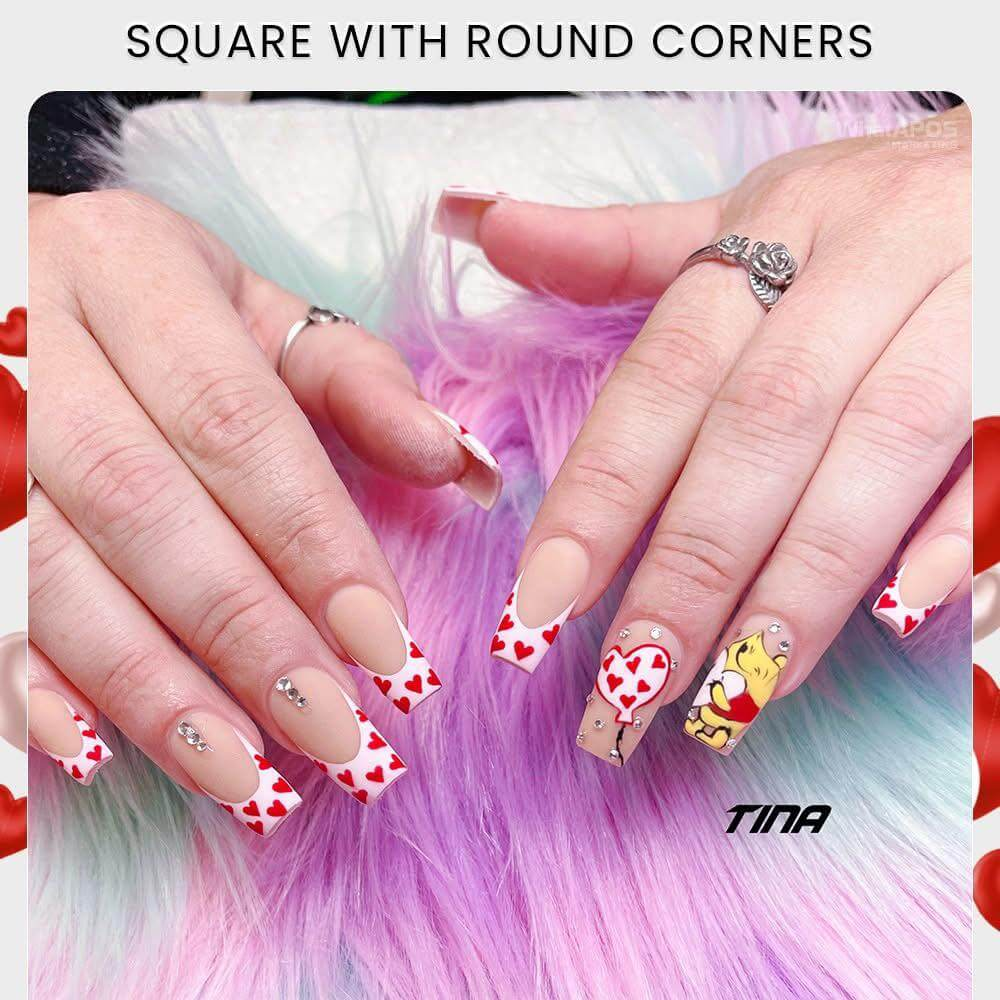

Choosing the right nail salon in Odessa TX is important if you want quality service and a relaxing experience. Not all nail salons provide the same level of care, so knowing what to look for can help you make the right decision.

A clean nail salon is one of the most important factors. Tools should be sanitized properly, and the environment should feel fresh and organized.
Experienced technicians can make a big difference in your results. Reading reviews and looking at real customer photos helps you choose a trusted salon in Odessa TX.
A good nail salon should provide consistent results every time. Clients should feel confident returning because they know what to expect.
Some clients prefer natural nails, while others like bold designs. Finding a salon that matches your personal style is important.
At Annie's Nails & Spa, we focus on clean service, skilled technicians, and consistent results for every client.